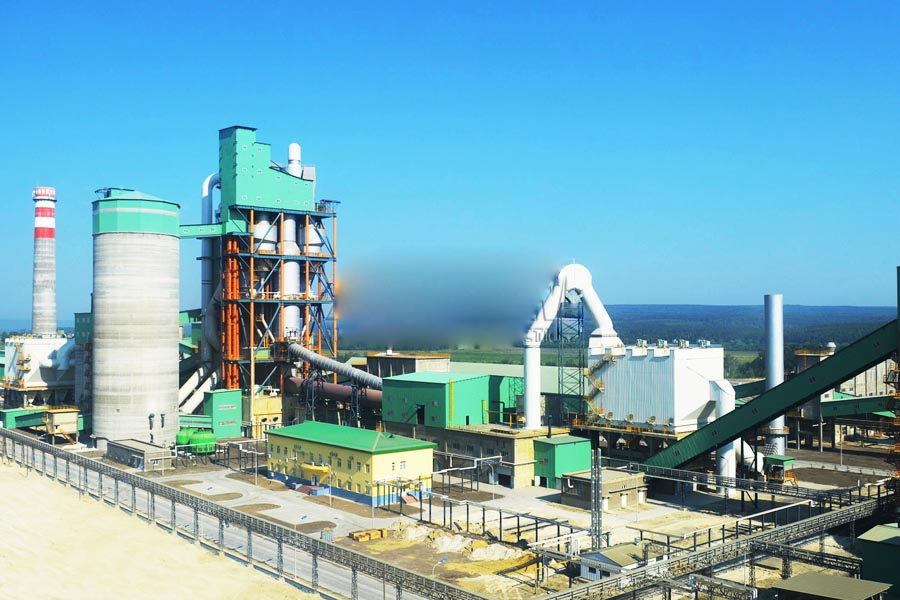

Construction waste crushing production line

Mobile construction waste crushing station for urban construction waste crushing.
Pozzolana Cement Production Line
Pozzolana Cement Production Line. Cement equipment, cement equipment, cement machinery, cement equipment, cement production line of cement production line (cement equipment) is the production of cement equipment consisting of a series of cement production line equipment. Cement equipment include: cement rotary kiln, cyclone preheater, grate cooler.
Cement production process, cement process cement production line (equipment for cement) production equipment consisting of a series of cement production line cement equipment (the cement production process). Mainly by crushing and pre-homogenization, homogenization raw material preparation, preheat decomposition, cement clinker firing.

Cement process,Cement production line
CAG Machinery (Cement process,Cement production line) in mineral processing aspects widely used, many customers get more benefits, CAG product also mainly for minerals, rock crusher, mineral grinding, sand stone and mineral processing and other fields. We provide Cement process,Cement production line technical guidance, based on your specific needs, for your rational design of production lines.
Because the tariff is low, you can (Cement process,Cement production line) to save a lot of costs, it can also be purchased to get more benefits, our products and designs for you is really value for money.
Cement production line, cement production line - a cement production raw fuel and the production of portland cement ingredients main raw material for lime and clay raw materials, sometimes based on fuel quality and varieties of cement.
Crush and pre-homogenization Crushing cement production process, most of the material to be crushed, such as limestone, clay, iron ore and coal. Limestone is the largest amount of raw materials, cement production, mining the particle size after the large, high hardness, so the broken limestone crushing the material in the cement plant occupies a more important position.
In Cement process,most of the raw materials used are extracted from the earth through mining and quarrying and can be divided into the following groups: lime (calcareous), silica (siliceous), alumina (argilla- ceous), and iron (ferriferous). Since a form of calcium carbonate, usually limestone, is the predominant raw material, most plants are situated near a limestone quarry or receive this material from a source via inexpensive transportation. The plant must minimize the transporta- tion cost since one third of the limestone is converted to CO2 during the pyroprocessing and is subsequently lost. Quarry operations consist of drilling, blasting, excavating, handling, loading, hauling, crushing, screening, stockpiling, and storing.We provide crushing screening, grinding machines,such as jaw crusher,cone crusher,ball mill,vertical roller mill.
Cement production lines, new dry process cement, cement production line introduction: dry cement production line is based on raw material pre-homogenization techniques and rotary kiln technology as the basis for suspension preheater and kiln decomposition technology as the core of modern cement production methods.
Zambia cement production line equipment price. Cement equipment, cement production line equipment What equipment do cement cement crusher production line equipment, raw mill, kiln, cement mill and other cement production line process is as follows:? 1, crushing and pre-homogenization (1) broken cement production process Most of the raw material to be broken.
Leave Me A Message, Now
If you have any questions regarding equipment prices, production line configuration or other problems, you can send a message to us, we will contact you soon.